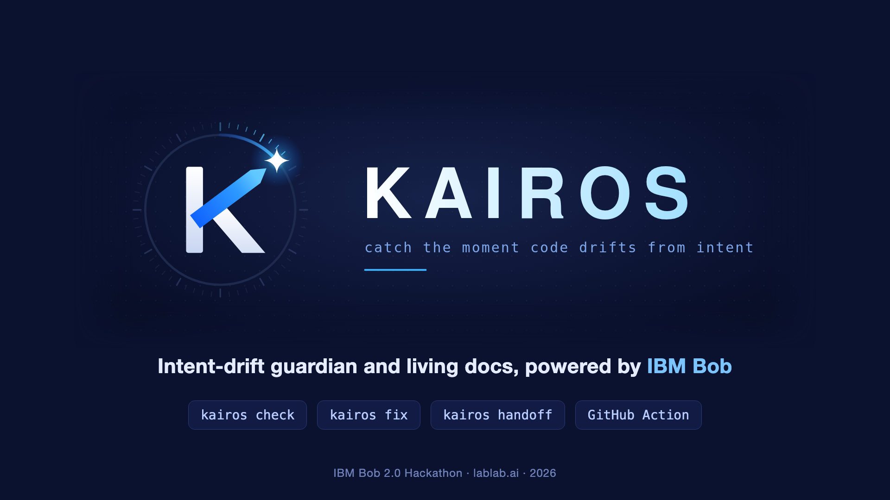
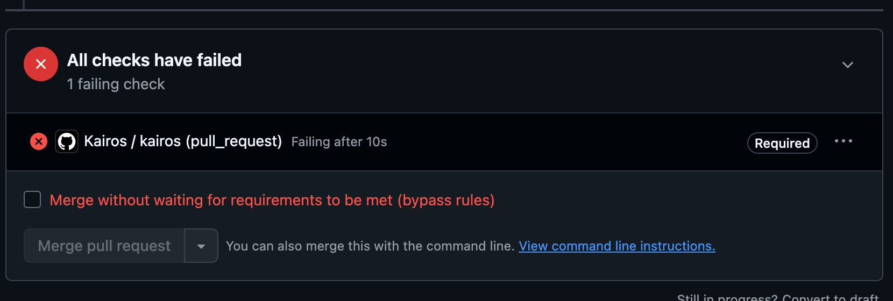
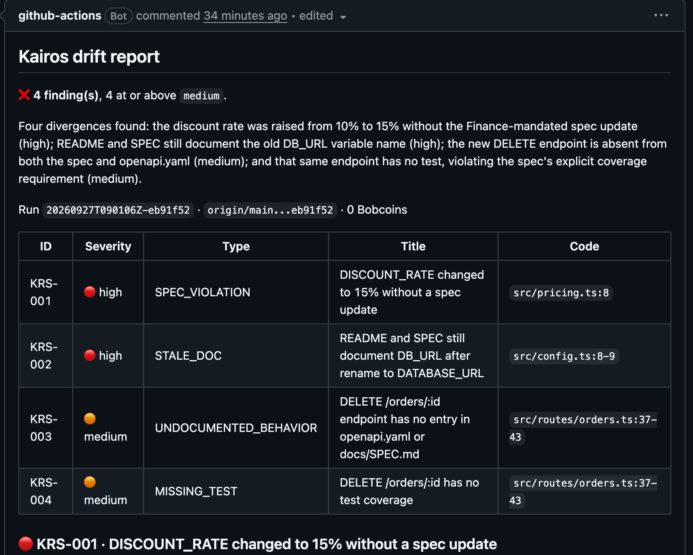
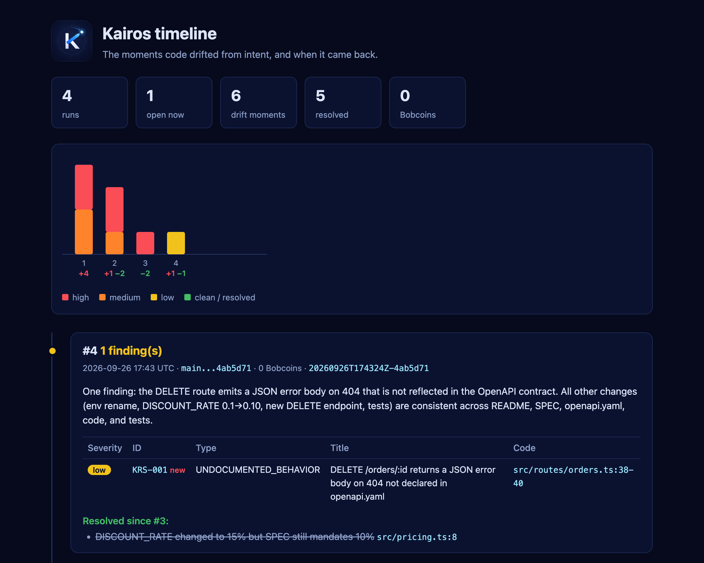

kairos check, pre-push hook, GitHub Action with a PR comment.$ kairos check KRS-001 high SPEC_VIOLATION src/pricing.ts:8 discount 10% → 15%, SPEC not updated KRS-002 high STALE_DOC src/config.ts:8-9 README + SPEC still say DB_URL KRS-003 medium UNDOCUMENTED_BEHAVIOR src/routes/orders.ts DELETE /orders/:id not in OpenAPI KRS-004 medium MISSING_TEST src/routes/orders.ts DELETE /orders/:id has no test 4 finding(s), 4 at or above medium. exit 1: push blocked
3/3 seeded drifts found, plus the missing test. 0 false positives on a control commit (a doc typo fix).
The same report lands on the PR as one comment, updated on every push. Mark the check as required and drift blocks the merge.


The rename is intended → docs follow the code. Bob updates README and SPEC.
11 s · 0.058 Bobcoins
Intended → Bob documents it in SPEC and OpenAPI and writes 2 tests.
26 s · 0.138 Bobcoins
Breaks a rule owned by Finance → the spec wins; Bob puts the code and tests back to 10%.
28 s · 0.221 Bobcoins
Each fix: Bob edits → you see the diff and confirm → Kairos commits, logs the decision in DECISIONS.md, re-checks. Docs-only by default; code only with --allow-code.
A single self-contained page: when drift appeared, when it was resolved, what it cost.
Last run: Bob noticed its own new endpoint returns a JSON 404 body the contract doesn't declare. Low severity, below the threshold: the check passes, the finding stays visible.

docs/kairos/: SPEC, PLAN, PROGRESS, DECISIONS, one file per task, HANDOFF.CLAUDE.md and AGENTS.md: every agent reads HANDOFF first. A new chat starts with "continue".kairos fix logs decisions; check flags stale docs.bob run --mode kairos --format json with --max-cost and --max-turnsfileRegex), kairos-fix-code, kairos-dev| On the demo, real Bob | |
|---|---|
| Drifts caught / false positives | 3/3 · 0 |
| One check | 20–35 s, 0.03–0.18 Bobcoins |
| Cached rerun | 0 Bobcoins |
| Each fix | 11–28 s |
| Check → 3 fixes → pass | 5.5 min, 1.12 Bobcoins |
| Whole hackathon | 4.85 / 40 Bobcoins |
Kairos · catch the moment code drifts from intent
github.com/OnixFireOne/ibm-kairos · MIT